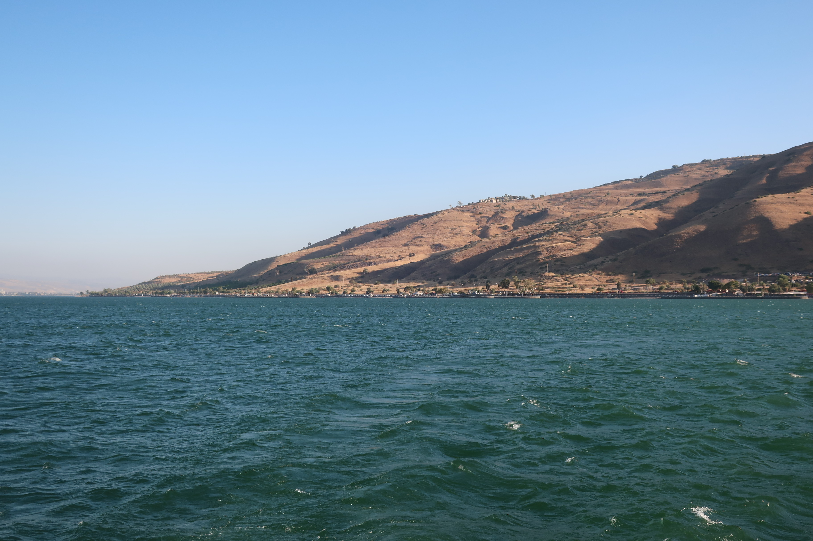
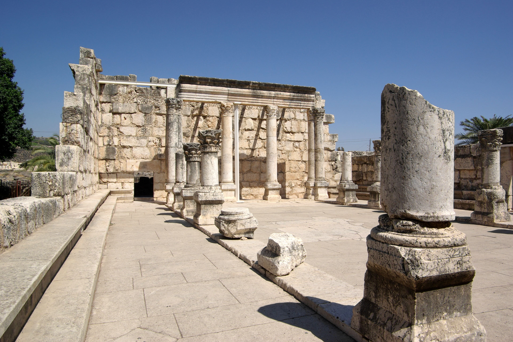

Olvida por un momento las imágenes heredadas. El Jesús que reconstruye la historia es un judío del siglo I, de una aldea pobre de Galilea, formado en un mundo muy concreto. Vamos a conocerlo en su contexto.
Con las herramientas de la entrega anterior —las fuentes y los criterios—, los historiadores han logrado un retrato bastante consensuado del Jesús anterior a la teología: un hombre de su tiempo y su tierra. La clave para entenderlo es una sola: Jesús fue, de principio a fin, un judío de Galilea. No un cristiano (el cristianismo aún no existía), sino un judío inmerso en el judaísmo del Segundo Templo que ya conocemos de la serie de Grecia y Roma. Situémoslo en su mundo.
Jesús no viene de Jerusalén, el centro religioso, sino de Galilea, una región rural del norte, a varios días de camino. Y de una aldea diminuta: Nazaret, tan insignificante que no aparece en ninguna fuente de la época fuera de los evangelios. Su mundo era el de los campesinos, pescadores y artesanos —él mismo probablemente fue tektōn, un trabajador de la madera y la construcción—.

Era una Galilea bajo tensión: campesinos cargados de impuestos (para Roma, para Herodes Antipas, para el Templo), pérdida de tierras, y una religiosidad popular intensa. Un caldo de cultivo de esperanzas mesiánicas y apocalípticas —el anhelo de que Dios interviniera pronto para poner fin a la injusticia—. Ese es el aire que respiraba Jesús.
El momento mejor documentado del inicio de Jesús es su encuentro con Juan el Bautista, un predicador apocalíptico que llamaba a la conversión y bautizaba en el Jordán. Como vimos, que Jesús fuera bautizado por Juan es uno de los datos más seguros —precisamente porque resultaba incómodo—: sugería que Jesús empezó como discípulo de Juan, subordinado a él.
El bautismo marca el arranque de la actividad pública de Jesús, probablemente tras la ejecución de Juan a manos de Herodes Antipas. Jesús retomó y transformó el mensaje: también él anunciaba algo inminente, pero con acento propio. Y ese mensaje tenía un nombre.
El corazón de la predicación de Jesús, en lo que casi todos los historiadores coinciden, fue el “reino de Dios” (o "reino de los cielos"). No se refería a un lugar tras la muerte, sino a la irrupción inminente del gobierno de Dios en la historia: un vuelco en que los últimos serían los primeros, los pobres serían saciados y los poderosos derribados. Era un mensaje profundamente judío y apocalíptico, en la línea de las esperanzas de su tiempo.
Jesús lo comunicaba con parábolas —historias cotidianas de sembradores, semillas y banquetes— y lo escenificaba con gestos: comía con marginados y pecadores, tocaba a los impuros, acogía a los excluidos. Su ética, radical, giraba en torno al amor, el perdón y una inversión de los valores establecidos. Reunió un grupo de discípulos y se ganó fama de sanador y exorcista —algo que, nótese, era esperable en su contexto y que las fuentes reportan con naturalidad, al margen de cómo lo interprete cada uno—.

El Jesús histórico fue un judío de una aldea pobre de Galilea, discípulo primero de Juan el Bautista. Su mensaje central fue el "reino de Dios": el anuncio de que Dios iba a transformar pronto el mundo, invirtiendo el orden injusto. Lo enseñaba con parábolas y comía con los marginados. Todo ello, dentro del judaísmo de su tiempo.
El Jesús que emerge de la criba histórica es coherente y reconocible: un profeta apocalíptico judío de la Galilea rural, heredero de Juan el Bautista, que anunció la llegada inminente del reino de Dios con un mensaje de inversión radical y misericordia hacia los excluidos. Nada de esto lo separa del judaísmo; al contrario, solo tiene sentido dentro de él. El Jesús histórico no fundó una religión nueva: predicó dentro de la suya.
Pero un mensaje así —el reino de Dios llega, el orden se invierte— era peligroso en la Judea ocupada por Roma. Predicar un "reino" que no era el del César, atraer multitudes, provocar en el Templo: eso tenía consecuencias. En la próxima entrega, el desenlace: los últimos días y la cruz.
El origen galileo de Jesús, su probable oficio de artesano, el contexto socioeconómico de Galilea y su relación con Juan el Bautista son ampliamente aceptados. El "reino de Dios" como núcleo de su predicación es consenso mayoritario; la interpretación apocalíptica (Schweitzer, E.P. Sanders, Ehrman) domina, frente a la lectura sapiencial minoritaria.
Las parábolas y la comensalidad con marginados tienen fuerte respaldo. Sobre las sanaciones y exorcismos: el consenso histórico es que Jesús tuvo fama de sanador y que sus contemporáneos le atribuían tales actos; la naturaleza de esos hechos queda fuera del método histórico y se respeta como cuestión de interpretación. La sinagoga visible de Cafarnaúm es de época posterior (s. IV-V), construida sobre una anterior.
Este artículo describe el Jesús histórico dentro de su judaísmo, con respeto por las tradiciones de fe que lo interpretan de otro modo.